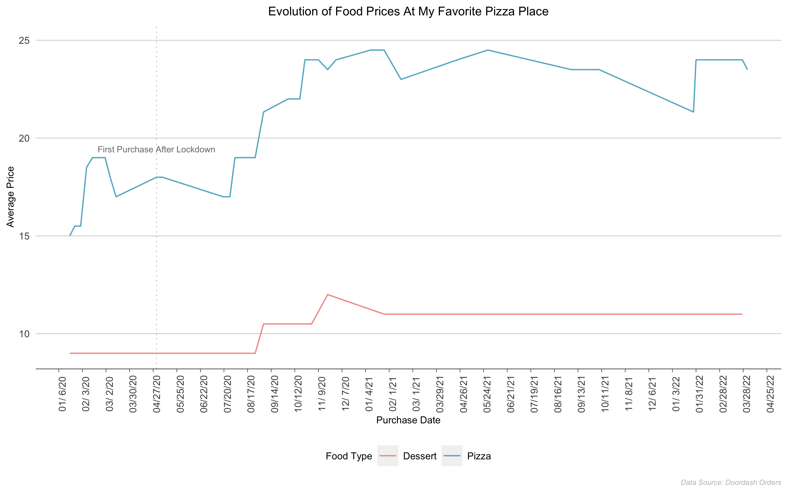
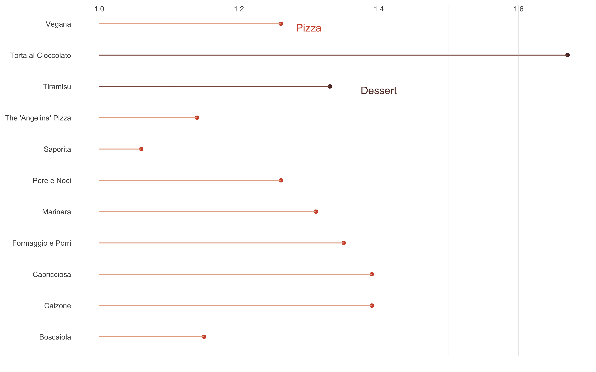

Doordash Delivery:
Are My Pizzas Getting More Expensive?
Author: Nicole Golden
Date: April 22, 2022
Yes, inflation is here. As someone who has to order take-out food weekly, I definitely felt the pinch since the lockdown in 2020. So I collected food prices from my favorite pizza place in Irvine for this project. First, I used smooth lines to visualize the evolution of the price changes for all pizzas and desserts. Then I plot the price changes for each food item.
(You can find the data and code on my GitHub page.)
Data
The data comes from my Doordash order record. Since pizza and dessert are the most ordered food types, I only made plots for these two types. In addition, I included food that was ordered more than once.
The main variables are purchase date and the average prices for pizza or dessert for that purchase date.
Behold: How Much Have The Prices Increased since Lockdown in 2020?
I plotted with raw data first.

Figure 1: Average Price Changes Over Time for Pizza and Dessert(Raw Data) (Image Source: Nicole Golden. Data Source: Doordash)
Then I plotted with smoothed lines and indicated the price changes. The price increase is about 66% for the pizza and a 33% increase for dessert!

Figure 2: Average Price Changes Over Time for Pizza and Dessert
(with Smoothed Lines)
(Image Source: Nicole Golden. Data Source: Doordash)
Take A Look At Price Change for Each Food Item
I thought it might be interesting to look at the price change for each food item. So I standardized the original price to 1, and I normalized the new price by dividing the latest price by the beginning price.
(Spoiler alert: "Pere e Noci" is my favorite pizza! Because its absolute price and percentage change are not that crazy, I almost always order this one!)
Here comes the plot!
